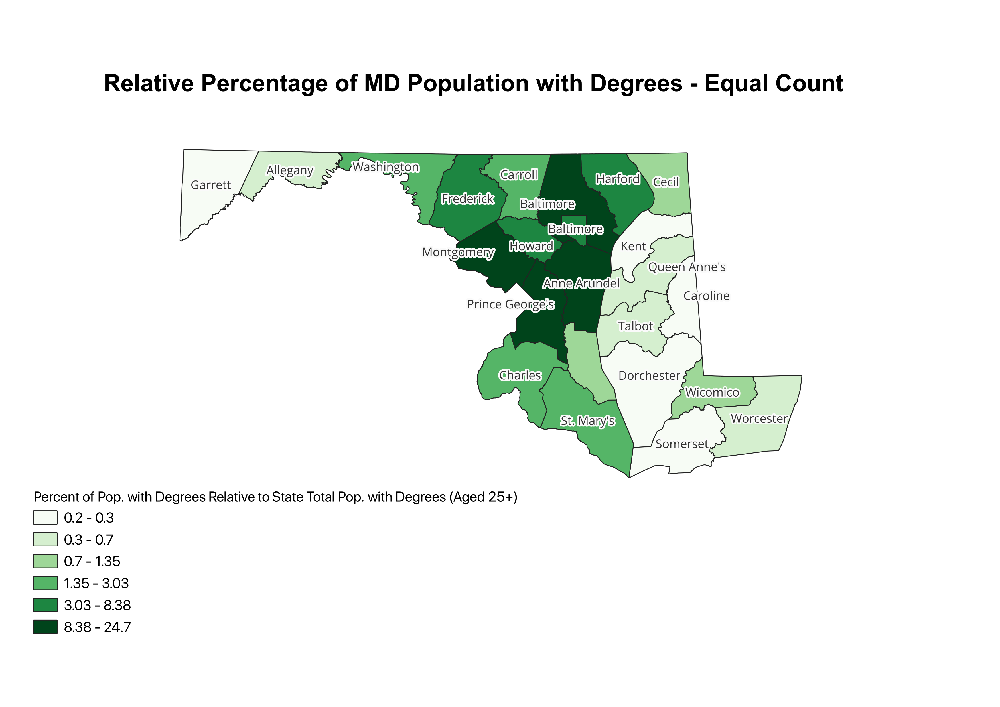
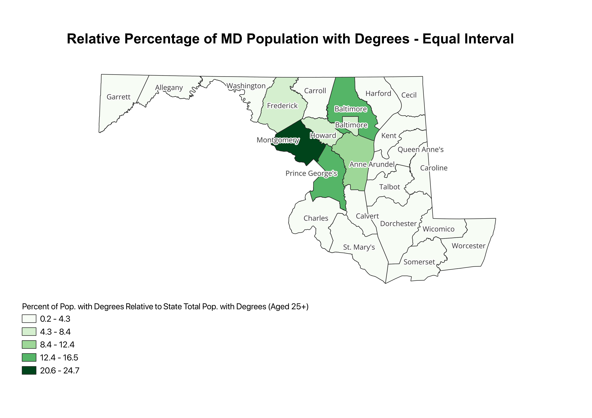
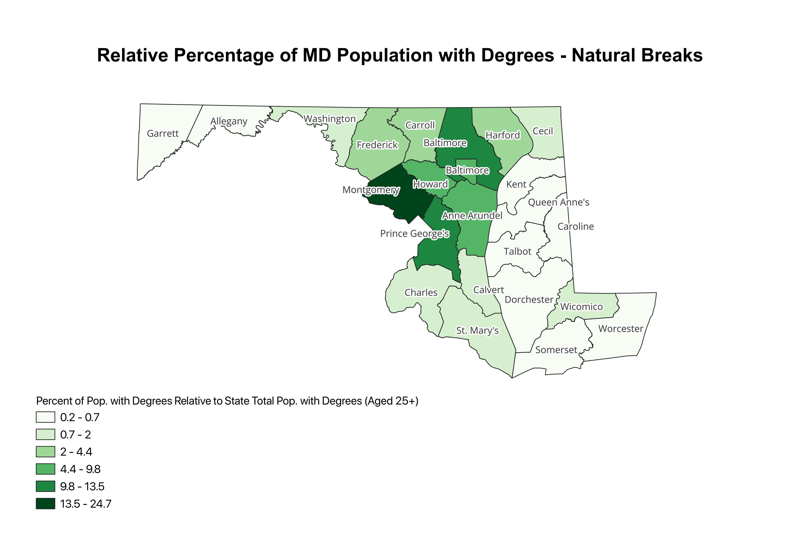

Homework 6 Part 2: Census Data Ratios and Degrees
For this assignment, I created a ratio based on the total population of each county aged 25+ with a bachelors degree (or higher) divided by the total population of Maryland aged 25+ with a bachelors degree (or higher). This effectively shows the percentage of each county's population aged 25+ with a bachelor's degree (or higher) relative to the state total.

The Equal Count distribution generates intervals with equal proportions of the sample. Equal Count is helpful since it ensures that each class is equally represented on the choropleth map. Because sample sizes vary, the counts may be slightly unequal in some circumstances. Equal count is detrimental since it may group outliers in categories that may not accurately represent the data's distribution.

The variation of data values is separated into equal-sized intervals. The equal interval distribution has the advantage of being unbiased in terms of category selection. Each category receives the same fraction of the value range. The Equal interval classification generates choropleth maps that are useful for identifying values that are over or underrepresented. Overrepresented intervals, on the other hand, will produce choropleth maps that are predominantly the same color. Equal Interval Distributions are good at representing data that is uniformly distributed.

Natural breaks in the data are detected by locating points with the lowest within-class sum of squared differences and the highest between-group sum of squared differences. The Jenks technique, in essence, decreases within-class variances (makes data classes as similar as feasible) while maximizing variance across groups (makes data classes as diverse as possible). The Natural Breaks (Jenks) categorization has the advantage of identifying true classes within the data. This is useful because it generates choropleth maps that accurately show data trends. The Jenks distribution is not well adapted to low variance data.